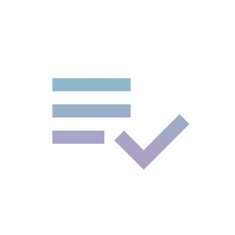

About
I create calm, human-centered iOS experiences that blend technical precision and artistic sensitivity. My work values subtle animation, gentle contrast, and tactile feedback — digital craftsmanship that feels personal.
Portfolio
Mirroracle
Published — a simple time manager to capture your days and reflect with clear daily, weekly, monthly, and yearly reviews. App Store

Rephrase
In Development — an AI-powered writing companion that helps language learners rephrase sentences with clarity and natural tone.